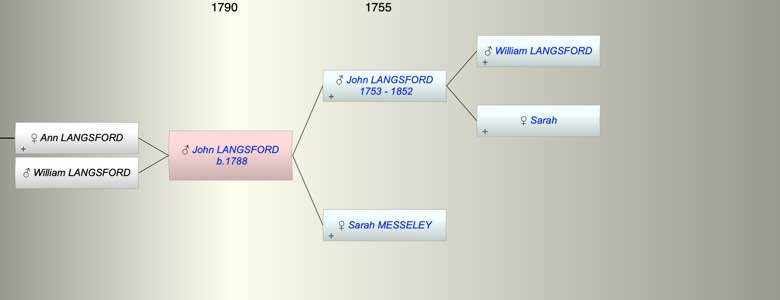

| [Index] |
| John LANGSFORD (1788 - ) |
|  |
| b. 1788 at Shiilingford St George |
| Near Relatives of John LANGSFORD (1788 - ) | ||||||
| Relationship | Person | Born | Birth Place | Died | Death Place | Age |
| Grandfather | William LANGSFORD | |||||
| Grandmother | Sarah | |||||
| Father | John LANGSFORD | 1753 | Shillingford St George | 1852 | Exminster | 99 |
| Mother | Sarah MESSELEY | |||||
| Self | John LANGSFORD | 1788 | Shiilingford St George | |||
| Daughter | Ann LANGSFORD | |||||
| Son | William LANGSFORD | |||||
| Sister | Ann LANGSFORD | 1784 | Exminster | |||
| Brother | WIlliam LANGSFORD | 1788 | Alphington Exeter | |||
| Half Sister | Mary LANGSFORD | 1791 | Exminster | |||
| Half Brother | Thomas LANGSFORD | 1794 | Exminster | 1876 | Alphngton | 82 |
| Son in Law | Henry WOOD | |||||
| Granddaughter | Juliana WOOD | |||||
| Nephew | Henry BREWER | 25 Mar 1814 | ||||
| Nephew | Robert BREWER | 03 Nov 1817 | 1887 | 70 | ||
| Nephew | Frederick BREWER | 16 Sep 1822 | Exminster | 1822 | Exminster | 0 |
| Nephew | Frederck BREWER | 16 Sep 1823 | Exminster | 1909 | Croydon | 86 |
| Nephew | Frank BREWER | 22 Nov 1825 | Exminster | 04 Nov 1895 | Kingston On Thames | 69 |
| Nephew | Lewis BREWER | 13 Mar 1828 | Exminster | 1836 | Exminster | 8 |
| Niece | Ellen BREWER | 20 Apr 1830 | Exminster | 02 Apr 1861 | 30 | |
| Niece | Flora BREWER | 15 Dec 1832 | Exminster | Y | ||
| Niece | Ruth BREWER | 23 Apr 1835 | Exminster | Y | ||
| Nephew | Lewis BREWER | 1839 | Exminster | 31 Mar 1906 | Redbridge, Hampshire | 67 |
| Niece | Ann Maria LANGSFORD | 1824 | Alphington | 1900 | Croydon | 76 |
| Brother in Law | Hugh UNDERHILL | |||||
| Brother in Law | William Solomon BREWER | 14 Mar 1819 | Exminster | |||
| Brother in Law | Thomas BREWER | 1801 | Heavitree | 07 Jan 1861 | 60 | |
| Sister in Law | Anna Maria BREWER | 06 Dec 1803 | Heavitree | 1888 | Lambeth | 85 |
| Events in John LANGSFORD (1788 - )'s life | |||||
| Date | Age | Event | Place | Notes | Src |
| 1788 | John LANGSFORD was born | Shiilingford St George | Note 1 | ||
| 1852 | 64 | Death of father John LANGSFORD (aged 99) | Exminster | Note 2 | |
| Note 1: bap 18 May 1788 son of John and Sarah ex FMP PR |
| Note 2: buried 15 April aged 100 and 1 month
buried 15 Apr 1852 aged 100 1 month ex FMP PR because of the calendar change this is correct |
| Personal Notes: |
|
1851 census living Alphngton 62 b Shillingford carpenter with wife Sarah 47 b Kenton no others. Wife Sarah is clear but there is no marriage other than to Dinah
1861 census ;iving Alphington, 72 widower with two granddaughters Julianna Wood 16 born Alphington and Mary Langsford 13 born Bristol . 1911 census JulianaWood 66 and Mary James Langsford 63 (cousins) are living togethter in Exeter both single |
| Created on a Mac™ using iFamily for Mac™ on 15 Sep 2023 |